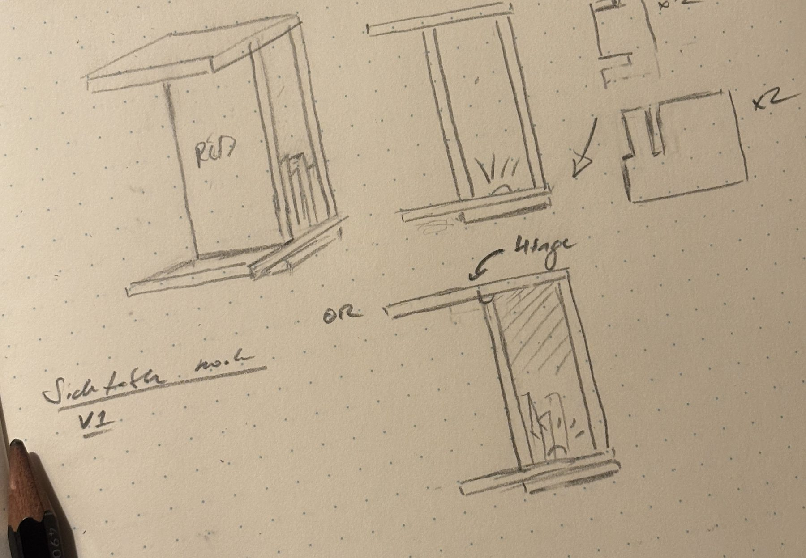
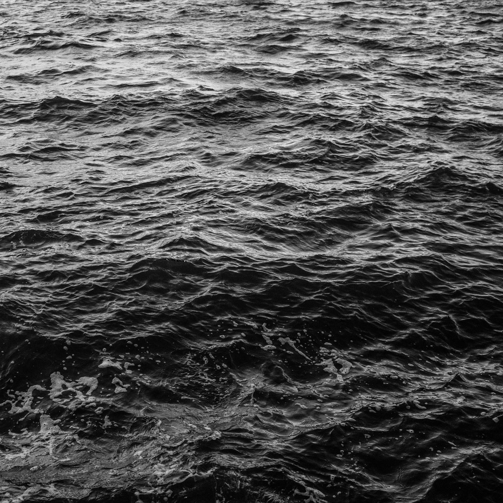

I want to make some things in my apartment with Rachael. I had intended to make the sidetable for the reading chair and still could — but my sense is that I probably won't. I drew up an entire sketch of the construction and rendered it, and encountered as a result the distinct feeling of having already done the material effort, which I haven't! The rendering is not a real object!
There is however a more pertinent question, which is likely why I have been avoiding the work of YCH — it's not that I think I have figured out my career, but that I do have a better impression of what my career needs. I am not certain what that could be, but my impression is that it has to include the construction of story. At dinner last night, Shelby pushed back on the vagueness of the title for this exact reason — to say something so vague in the face of trying to convince someone that they should pay me is probably fighting uphill. Which is extremely helpful, since what I need is someone pointing at what I enjoy doing and winnowing out what would probably have the most impact for a business.
I also really enjoyed catching up with her. She's very good at keeping the conversation light where it needs to be, but her emotional reaction to the Barge Ballet is memorable. It showed me a lot about what it means to make art, and what is not needed. Permission, when it comes to art, or to the creation of any great thing, is likely the most destructive of barriers for most: it can feel as though one is not "allowed" to make a work due to the accreditation of a discipline, and truly it is the case that accreditation is the loosest of constructs — accreditation is merely a way to quickly evaluate someone's ability and to contrast it against that of others. The cool thing about not asking for permission is that it becomes possible to demonstrate one's ability through creation rather than through accreditation. In fact, my sense much of the time is that accreditation replaces the substance of material output for those who believe in it, often leading to assymetric power in the hands of those who believe themselves to be more or less accredited than their peers.
That's bullshit! The accreditation means nothing! The moral here is that the most valuable accreditation is your output and the quality that makes it up — what have you done, and were you good at it?? An accreditation can be — or should be — a starting point — and indication of what outputs are possible. This is a really cool fact — because it means that if you don't have that accreditation, but you do have output, you are roughly equivalent.
There are two bits of evidence to support this. On the one, we need only examine the conflict that arises between blue collar (skill) workers and the people they often have to work with; white collar (accredited) workers. The reason a blue-collar worker will feel inferior to a white collar worker is due to accreditation: a white collar worker is most likely to wave about some peice of paper or other to demonstrate their knowledge of a skill, while a blue-collar worker will only have done so through actually having done a skill. The asymmetry here is bound to generate a conflict: if a white collar worker demonstrates knowledge of a skill by talking about it, but not by performing the act — this is a knowledge not of skill but of awareness. Handily, a blue collar worker could demonstrate the knowledge of the skill entirely by doing the damned thing, demonstrating the difference between these types of knowledge. Explicitly, a white-collar worker might be able to demonstrate an analytical knowledge of a skill, but it is again the practical attention to the doing of the skill — the output of the knowledge — which in the end is the basis of useful knowledge.
This is not to place one or another on a pedestal, however. Any type of knowledge is valuable in what it demonstrates, whether theoretical or not. In Paulo Freire's "Pedagogy of Hope" (a response written to his previous and more widely disseminated "Pedagogy of the Oppressed"), he describes exactly when the equivalency makes itself apparent. He describes a scenario he encountered himself as an educator, wherein his desire to offer agency to a group of farmers resulted in one particular farmer being resistant to offering their knowledge. The farmer stopped themselves in the act, saying to Freire that likely the farmers should defer to him since he was the one with a college education and... accreditation! Freire had encountered this impasse before, and acting quickly to respond, he suggested that the room play a knowledge game. On the blackboard, he drew a vertical line separating it into halves, and then laid out the rules: the farmers would get a point if they proposed something that they thought Freire did not know, and he would get a point if he proposed something they did not know.
The room went back and forth on the subject, and it became quickly apparent by the ping-ponging tally of opposing knowledge that either camp did not have a significant advantage of knowledge over the other; by the end of the game, either side was tallied at 10 points, with the farmers having proposed agricultural knowledge that Freire had no exposure to, and Freire doing the same to them with academic concepts.
The aim of the exercise was to demonstrate the false inequivalency of accreditation: accreditation is merely a mechanism by which to demonstrate a type of knowledge! Freire's demonstration itself is an output, but the very act of doing so was as a system for leveling out what is expected from accreditation.

These two bits of information I think give us the tools to create an equivalency in the act of creation: a skill is practiced knowledge, however it manifests, and accreditation is merely a system to measure it, not to elevate it above the knowledge of another (contrarians be damned). It brings me back to Shelby bringing up the art of Mierle Laderman Ukeles — the act of turning any overlooked act into a work of art. "Maintenance Art", as Ukeles has termed the practice, is the elevation of labor into an artistic practice. In 1976, for a Whitney Museum exhibition, she asked the roughly 300 maintenance workers in the building to label an hour of their normal working day as "art". In 1973, she cleaned the steps of the Wadsworth Atheneum in Hartford by hand, other maintenance workers coming to her with cleaning supplies when she began to run out — and this work was done as a demonstration of how this purported "unskilled" labor may also be seen as a legitimizing skill. The false equivalency exists as well for skills! Those acts that require the continuous care and repetition in order to perfect are no less "skillful" than a complicated act — it is merely procedural. In one of Ukeles's works, she went to a barge operator and asked them what in the course of their work they had always wanted to do, to which one operator responded that they had always wanted to pilot the massive steel vessel in a figure eight. This peice, when it was performed, was titled "Marrying the Barges: A Barge Ballet", or "A Barge Ballet for 2 Tugs and 6 Barges", and was performed in 1984 on the Hudson.

One might reflect on the convention of "Maintenance Art" as an act of generosity on the part of an artist, but it's honest not to do so. It is far more humbling to recognize the implications of Ukeles's creative acts — many of them were not her own, instead acting as a portal through which to re-examine our surroundings and the questions of both permission and accreditation. Truthfully, one has to ask if her Barge Ballets (she did another in 1992, in Pittsburgh) would only have been possible through her accreditation as an artist, but the validity of her artistic practice was contingent on the output she demonstrated the capacity to produce. Yes, Ukeles was educated at both Barnard and Pratt, but left Pratt when her sculptures were evaluated by the institute as "over-sexed". Her 1984 and 1992 works were indeed performed after her accreditation of a masters from NYU, so one wonders what authority she was granted if not through this accreditation to bend the will of otherwise "un-artistic" institutions toward the will of artistic expression. The 1969 Manifesto for Maintenance Art is an output she employed in order to demonstrate a desire to elevate the repetitive "unskilled" invisible labor of those; it was the creation of a legitimizing form of accreditation that argued the need for or the expression of a certain "art"; as by drawing on the Avant-Garde movement's "readymade" art movement put forth by Duchamp. Critically, it was not to say that she was more or less "qualified" to create the art, instead that the art already existed and she was merely drawing attention to it.

All of this bubbles up to a good lesson for anyone who follows either Freire or Ukeles' logic: there is no "higher knowledge" and there is no "art," save that which we designate as either art or as knowledge. For me, it generated a new dimension of freedom: while both of these individuals did form their views on the basis of academic accreditation, the pedagogical re-examination of outputs as founded upon skill and output rather than on titular permission becomes a lesson. You can just do things, and you get to call it art, because it probably is.